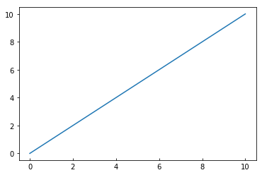
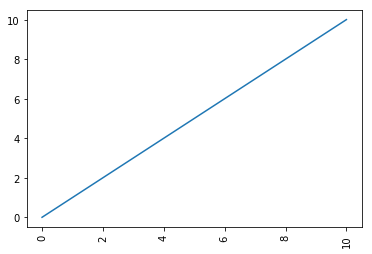
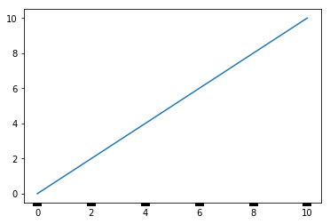
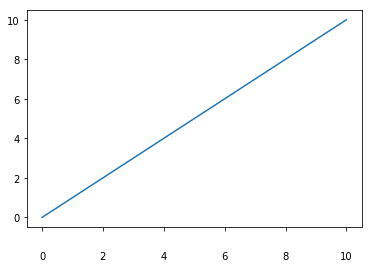
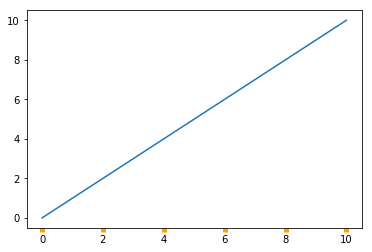
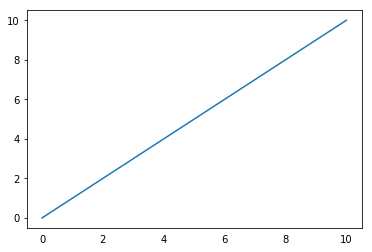
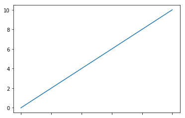
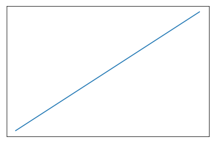

Customizing Tick and Label Style
Once you’ve got the correct strings printing along the axes, with as many (or few) ticks as you want, and at the right spacing, there are a lot of options for the way you can adjust the style of the rendering.
Let’s start with a simple graph.
%pylab inline
x = y = np.linspace(0, 10)
fig, ax = plt.subplots()
ax.plot(x, y)Populating the interactive namespace from numpy and matplotlib
[<matplotlib.lines.Line2D at 0xa36c0b8>]

Changing Appearance
The tick_params() method for an Axis object gives you access to a whole bunch of options for formatting your ticks and their labels, including:
If the tick faces in or out
fig, ax = plt.subplots()
ax.plot(x, y)
ax.tick_params(axis='x',
direction='in')
How much the label is rotated
fig, ax = plt.subplots()
ax.plot(x, y)
ax.tick_params(axis='x',
rotation=90)
How thick a tick is
fig, ax = plt.subplots()
ax.plot(x, y)
ax.tick_params(axis='x',
width=10)
The space between label and tick
fig, ax = plt.subplots()
ax.plot(x, y)
ax.tick_params(axis='x',
pad=20)
The color of the ticks
fig, ax = plt.subplots()
ax.plot(x, y)
ax.tick_params(axis='x',
color='orange',
width=5)
Hiding Them Altogether
We can also control whether or not the tick shows up
fig, ax = plt.subplots()
ax.plot(x, y)
ax.tick_params(axis='x',
bottom=False)
Or the label
fig, ax = plt.subplots()
ax.plot(x, y)
ax.tick_params(axis='x',
labelbottom=False)
Or all of it
fig, ax = plt.subplots()
ax.plot(x, y)
ax.tick_params(axis='both',
labelbottom=False,
bottom=False,
labelleft=False,
left=False)